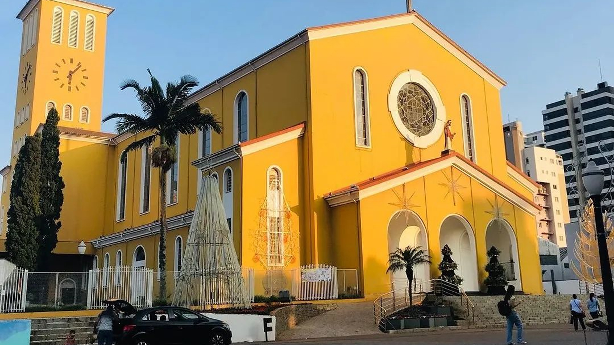

O Rio de Janeiro é uma cidade costeira localizada no sudeste do Brasil, e é um dos destinos turísticos mais famosos do mundo.
Fundada em 1º de março de 1565 pelos portugueses, a cidade tem uma rica história que reflete influências europeias, africanas e indígenas,
sendo um ponto de encontro de diversas culturas.
Sua geografia é marcada por impressionantes formações naturais, como o Pão de Açúcar, o Corcovado com o Cristo Redentor, e a Baía de Guanabara, que a tornam única. As praias de Copacabana, Ipanema, Leblon, Barra da Tijuca e muitas outras são famosas globalmente,
atraindo turistas o ano inteiro para aproveitar o sol, o mar e o clima descontraído.
Por: Emanuel Felipe
Opções de pacotes de viagem! ↓
Saiba Mais!

Gramado é uma das cidades mais charmosas e visitadas do estado do Rio Grande do Sul, localizada na Serra Gaúcha. Com um clima ameno, paisagens deslumbrantes e arquitetura de estilo europeu, Gramado é um destino turístico que atrai visitantes durante todo o ano, mas especialmente no inverno, quando as temperaturas caem e a cidade ganha um charme ainda mais especial.
A cidade é conhecida pela sua forte influência da cultura alemã e italiana, que se reflete na culinária, nas tradições e até na arquitetura. O clima de montanha e a vegetação de pinheiros e araucárias ajudam a criar uma atmosfera única, ideal para quem busca um refúgio tranquilo ou um destino para explorar em família, com amigos ou a dois.
Por: Thiago
Opçoẽs de pacotes de viagem! ↓
Saiba Mais!

Se você está buscando um destino surpreendente no sul do Brasil, Pato Branco é uma excelente escolha! Localizada no sudoeste do Paraná, essa cidade encanta pela mistura perfeita de inovação,
qualidade de vida e tradições culturais que acolhem qualquer visitante.
🧳 Por que visitar Pato Branco?
Cidade Inteligente e Acolhedora
Com ruas limpas, praças organizadas e um povo simpático,
Pato Branco é uma cidade moderna que mantém aquele ar de interior. É considerada uma das cidades mais inteligentes do Brasil, com destaque em educação, saúde e infraestrutura digital
Por: Thiago
Opçoẽs de pacotes de viagem! ↓
Saiba mais!